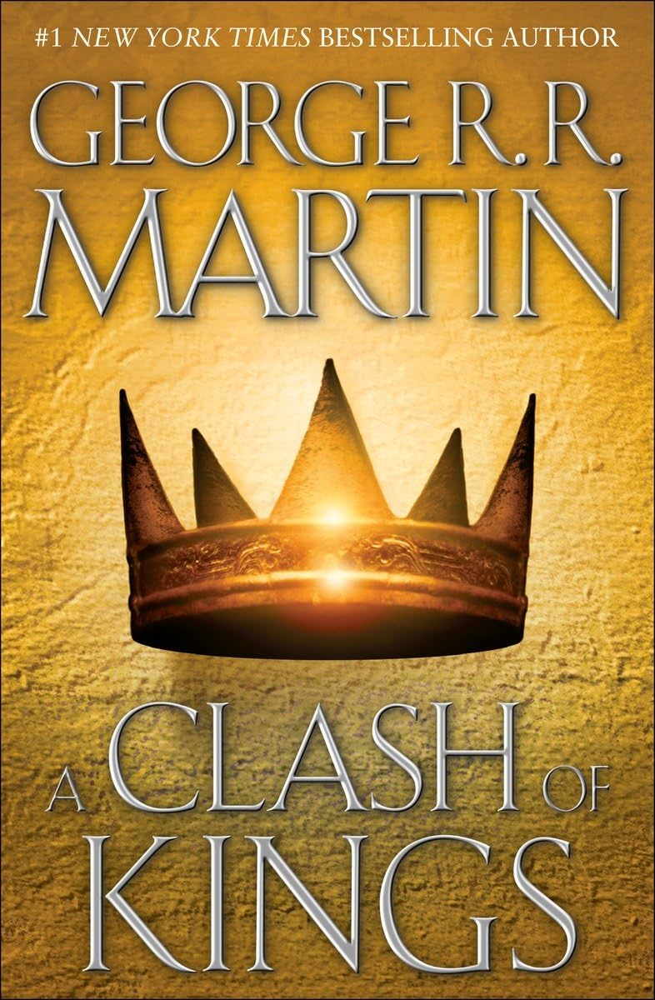

A Song of Ice and Fire
A Song of Ice and Fire is a series of high fantasy novels by the American author George R. R. Martin. It depicts a violent world dominated by political realism.
Learn MoreA Song of Ice and Fire is a series of high fantasy novels by the American author George R. R. Martin. It depicts a violent world dominated by political realism.
Learn More
The first book, A Game of Thrones, released 1996.
The second book, A Clash of Kings, released 1998.

The third book, A Storm of Swords, released 2000.
The fourth book, A Feast for Crows, released 2005.
The fifth book and most recently-released book, A Dance with Dragons, released 2011.
The High Septon once told me that as we sin, so do we suffer. If that's true, Lord Eddard, tell me ... why is it always the innocents who suffer most, when you high lords play your game of thrones?
-Varys, the Spider